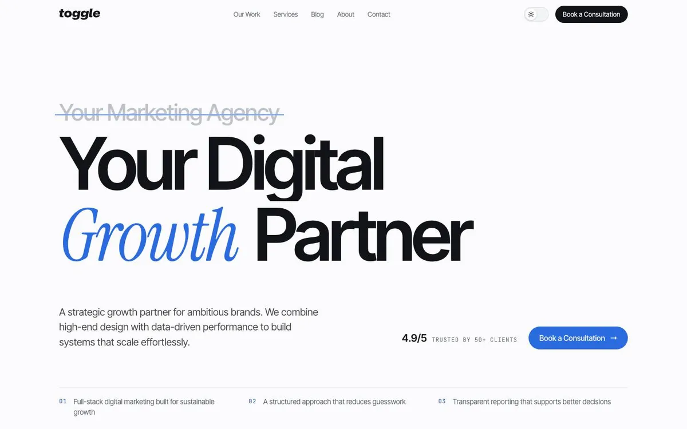
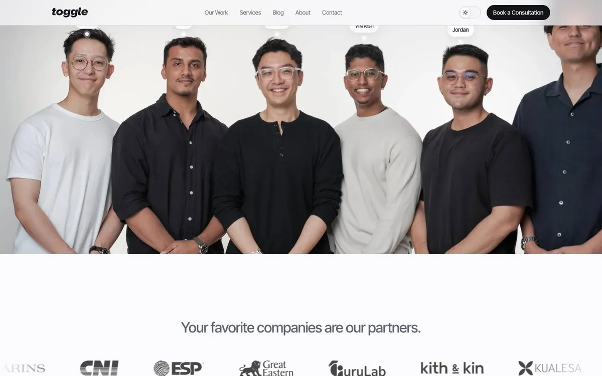

Concept A
Clean Room
Calm, light-first and close to an Apple product page. One idea per screen, big type, and the founders on white seamless.
- The hero strikes out “Your Marketing Agency” and sets the growth partner line in its place.
- The founders photo opens from a framed card to full bleed as you scroll, and each co-founder gets a name tag.
- Hover a portrait to play the shoot like stop-motion. On About, drag across a photo to scrub through the frames.